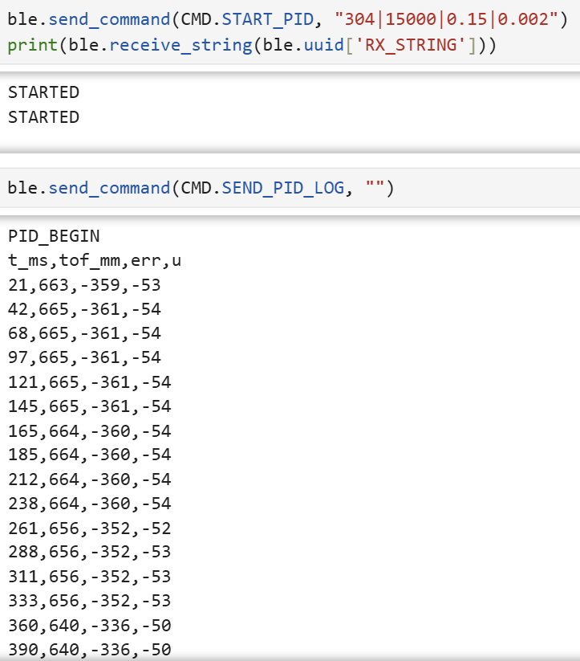
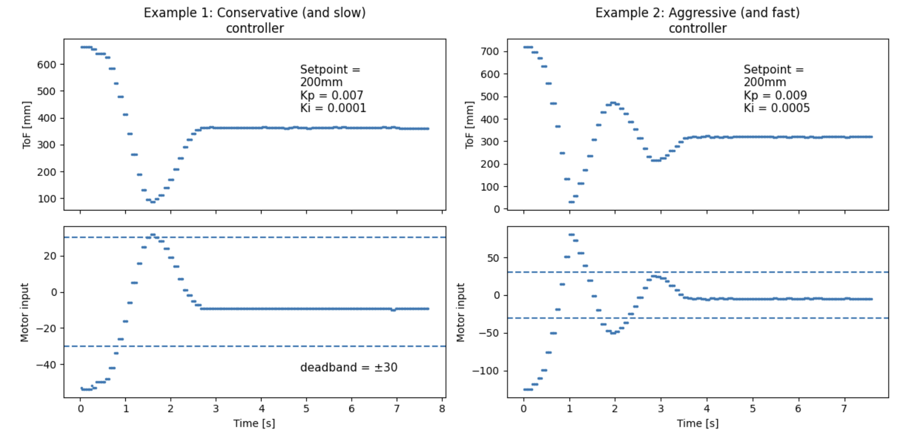

Placeholder:
images/lab5_fig2_tof_mount.jpgHetao Yin (Hubery) — ECE 5160 Fast Robots
Goal: implement closed-loop position control using a front-facing VL53L1X ToF sensor to hold the robot at 1 ft (304 mm) from a wall. The controller is run untethered on the robot, while a laptop triggers trials and downloads logs over BLE.
I used the course BLE string protocol (cmd:value with delimiter |) to (1) start a timed run and (2) stream a CSV log back to the laptop. This makes tuning repeatable without a USB cable.
The notebook triggers runs and pulls back the log from RX_STRING.
# Start PID run: setpoint_mm | run_ms | Kp | Ki
ble.send_command(CMD.START_PID, "304|50000|0.3|0.002")
print(ble.receive_string(ble.uuid['RX_STRING'])) # "STARTED"
# Download log (CSV lines between PID_BEGIN and PID_END)
ble.send_command(CMD.SEND_PID_LOG, "")
# (loop receive_string until PID_END; save lines to file for plotting)Two commands were added: START_PID (start a timed trial) and SEND_PID_LOG (send CSV log).
case START_PID: {
int sp_mm, run_ms; float kp, ki;
robot_cmd.get_next_value(sp_mm);
robot_cmd.get_next_value(run_ms);
robot_cmd.get_next_value(kp);
robot_cmd.get_next_value(ki);
start_pid_run(sp_mm, (unsigned long)run_ms, kp, ki);
tx_characteristic_string.writeValue("STARTED\n");
break;
}
case SEND_PID_LOG: {
pid_running = false;
stop_motors();
send_pid_log(); // streams PID_BEGIN ... PID_END
break;
}Each trial logs a CSV with columns: t_ms,tof_mm,err,u (time from trial start, measured distance, error, motor command).

images/lab5_fig1_ble_log_screenshot.pngA single VL53L1X ToF sensor is mounted at the front of the robot, facing forward to measure distance to the wall. (Only one sensor was used to avoid I2C address conflicts and simplify control.)
images/lab5_fig2_tof_mount.jpg
Motors are driven using PWM output (analogWrite()) to a motor driver. Direction is selected by swapping which input
receives PWM (the opposite input is set to 0). A small motor deadband exists, so low commands may not move the robot.
The ToF measurement is implemented as a non-blocking state machine (start ranging → check ready → read distance), so the main loop does not stall waiting for the sensor.
// non-blocking ToF update (startRanging / checkForDataReady / getDistance / stopRanging)
// updates last_tof_mm when new data is readyError is computed as err = setpoint_mm - tof_mm. The motor command is computed from proportional and integral terms (PI). Output is clamped to motor limits.
// PI controller (conceptual)
err = setpoint_mm - tof_mm;
integ += err * dt;
u = clamp(Kp*err + Ki*integ, -255, 255);
set_motor_cmd(u);When the motor command saturates or the robot cannot move due to deadband/friction, the integral term can continue accumulating (wind-up), leading to overshoot and oscillation. I added wind-up protection using conditional integration and integrator clamping.
// wind-up protection idea (snippet)
// 1) only integrate when not saturated (or when error would pull output back from saturation)
// 2) clamp integral to +/- I_MAXI rate-limited logging to reduce BLE bandwidth and to match sensor update rates. The log uses a fixed recording period:
(Fill in with your measured value from the timestamp differences if you want a more precise number.)

images/lab5_fig3_tof_vs_time.png
images/lab5_fig4_u_vs_time.png
images/lab5_fig5_err_vs_time.pngThe lab asks for multiple repeated experiments. I recorded at least three trials starting from different initial distances.
videos/lab5_vid1_trial1.mp4videos/lab5_vid2_trial2.mp4videos/lab5_vid3_trial3.mp4To demonstrate disturbance rejection, I manually displaced the robot away from the wall and observed it return toward the 304 mm setpoint.
videos/lab5_vid4_disturbance.mp4I tuned Kp and Ki to balance response speed and stability. Larger Kp increases responsiveness but can cause oscillations; Ki reduces steady-state error but can lead to wind-up if not protected.
Placeholder section: If implemented, include raw vs estimated ToF on the same plot and discuss improvement in response.

images/lab5_fig6_raw_vs_estimated.pngMain observations: